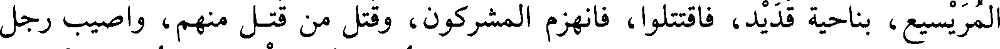
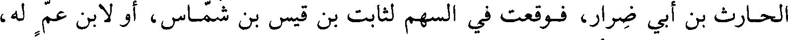

File: 000690.gt.txt (if the image is defective, simply delete all Arabic text and the line will be excluded)

ذكر غزوة بني لحيان(1
File: 000691.gt.txt (if the image is defective, simply delete all Arabic text and the line will be excluded)
في جمادى الأولى منها خرج رسول الله صعلم إلى بني لحيان يطلب بأصحاب
File: 000692.gt.txt (if the image is defective, simply delete all Arabic text and the line will be excluded)

الرجيع خبيب بن عدي وأصحابه وأظهر أنه يريد الشام ليصيب من القوم غرة واغد
File: 000693.gt.txt (if the image is defective, simply delete all Arabic text and the line will be excluded)

السير حتى نزل على غران منازل بني لحيان وهي بين أمج وعسفان فوجدهم قد حذروا
File: 000694.gt.txt (if the image is defective, simply delete all Arabic text and the line will be excluded)
وتمنعوا في رؤوس الجبال فلما أخطأه ما أراد منهم خرج في مائتي راكب حتى نزل
File: 000695.gt.txt (if the image is defective, simply delete all Arabic text and the line will be excluded)
بعسفان تخويفا لأهل مكة وأرسل فارسين من أصحابه حتى بلغا كراع الغميم ثم عاد
File: 000696.gt.txt (if the image is defective, simply delete all Arabic text and the line will be excluded)
قافلا(2
File: 000697.gt.txt (if the image is defective, simply delete all Arabic text and the line will be excluded)
(غران(3) بضم الغين المعجمة وفتح الراء وبعد الألف نون وأمج بفتح
File: 000698.gt.txt (if the image is defective, simply delete all Arabic text and the line will be excluded)

ذكر غزوة ذي قرد(4
File: 000699.gt.txt (if the image is defective, simply delete all Arabic text and the line will be excluded)

الهمزة والميم وآخره جيم
File: 000700.gt.txt (if the image is defective, simply delete all Arabic text and the line will be excluded)
ثم قدم رسول الله صعلم المدينة فلم يقم إلا أياما قلائل حتى أغار عيينة بن
File: 000701.gt.txt (if the image is defective, simply delete all Arabic text and the line will be excluded)
حصن الفزاري في خيل غطفان على لقاح النبي وأول من نذر بهم سلمة بن الأكوع
File: 000702.gt.txt (if the image is defective, simply delete all Arabic text and the line will be excluded)
المدينة فلم نمكث بها إلا ثلاثا حتى خرجنا إلى خيبر(1
File: 000703.gt.txt (if the image is defective, simply delete all Arabic text and the line will be excluded)
وفي هذه الغزوة نودي يا خيل الله اركبي ولم يكن يقال قبلها
File: 000704.gt.txt (if the image is defective, simply delete all Arabic text and the line will be excluded)
(قرد بفتح القاف والراء
File: 000705.gt.txt (if the image is defective, simply delete all Arabic text and the line will be excluded)

ذكر غزوة بني المصطلق من خزاعة(2
File: 000706.gt.txt (if the image is defective, simply delete all Arabic text and the line will be excluded)
ذكرت هذه الغزوة بعد غزوة ذي قرد وكانت في شعبان من السنة (سنة ست
File: 000707.gt.txt (if the image is defective, simply delete all Arabic text and the line will be excluded)
وكان بلغ رسول الله صعلم أن بني المصطلق تجمعوا له وكان قائدهم الحارث بن أبي
File: 000708.gt.txt (if the image is defective, simply delete all Arabic text and the line will be excluded)
ضرار أبو جويرية زوج النبي صعلم فلما سمع بهم خرج إليهم فلقيهم بماء لهم يقال له
File: 000709.gt.txt (if the image is defective, simply delete all Arabic text and the line will be excluded)

المريسيع بناحية قديد فاقتتلوا فانهزم المشركون وقتل من قتل منهم وأصيب رجل
File: 000710.gt.txt (if the image is defective, simply delete all Arabic text and the line will be excluded)
من المسلمين من بني ليث بن بكر اسمه هشام بن صبابة أخو مقيس بن صبابة أصابه
File: 000711.gt.txt (if the image is defective, simply delete all Arabic text and the line will be excluded)

رجل من الأنصار بسهم من رهط عبادة بن الصامت وهو يرى أنه من العدو فقتله خطأ
File: 000712.gt.txt (if the image is defective, simply delete all Arabic text and the line will be excluded)
وأصاب رسول الله صعلم سبايا كثيرة فقسمها في المسلمين وفيهم جويرية بنت
File: 000713.gt.txt (if the image is defective, simply delete all Arabic text and the line will be excluded)

الحارث بن أبي ضرار فوقعت في السهم لثابت بن قيس أو لابن عم له
File: 000714.gt.txt (if the image is defective, simply delete all Arabic text and the line will be excluded)
فكاتبته عن نفسها فأتت رسول الله صعلم فاستعانته في كتابتها فقال لها هل لك على
File: 000715.gt.txt (if the image is defective, simply delete all Arabic text and the line will be excluded)

خير من ذلك قالت وما هو يا رسول الله صعلم قال أقضي كتابتك وأتزوجك قالت نعم يا
File: 000716.gt.txt (if the image is defective, simply delete all Arabic text and the line will be excluded)
رسول الله ففعل وسمع الناس الخبر فقالوا أصهار رسول الله صعلم فأعتقوا أكثر من مائة
File: 000717.gt.txt (if the image is defective, simply delete all Arabic text and the line will be excluded)

بيت من أهل بني المصطلق فما كانت امرأة أعظم بركة على قومها منها(3
File: 000718.gt.txt (if the image is defective, simply delete all Arabic text and the line will be excluded)

وبينما الناس على ذلك الماء وردت واردة الناس ومع عمر بن الخطاب أجير له
File: 000719.gt.txt (if the image is defective, simply delete all Arabic text and the line will be excluded)

من بني غفار يقال له جهجاه فازدحم هو وسنان الجهني حليف بني عوف من